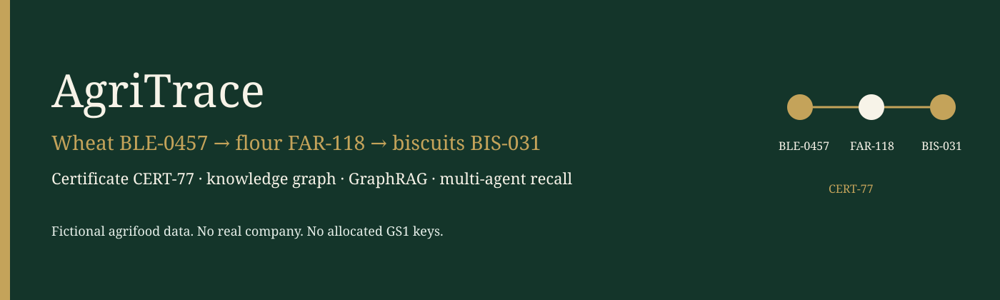

AgriTrace. Fictional data. Canonical write-up: the repository README. Images: docs/assets, referenced relatively from this file.
AgriTrace is a fictional agrifood traceability demo for El Bachir Mourabit.
Business question: where did a lot come from, where did it go, and is its certificate still valid?
Running example, used in the seed, the tests, the eval set, and the README:
wheat BLE-0457 → flour FAR-118 → biscuits BIS-031
certificate CERT-77, valid through 2027-12-31The stack is a small OWL vocabulary, a SQL ERP extract, a property graph, hybrid GraphRAG, a LangGraph supervisor with a human interrupt before a recall, three MCP tools, and a minimal A2A card. Continuous integration runs with LLM_MODE=mock and no Neo4j.
All names and lots are fictional. No client company is described.
The long-form document is the README. Figures live in assets.
